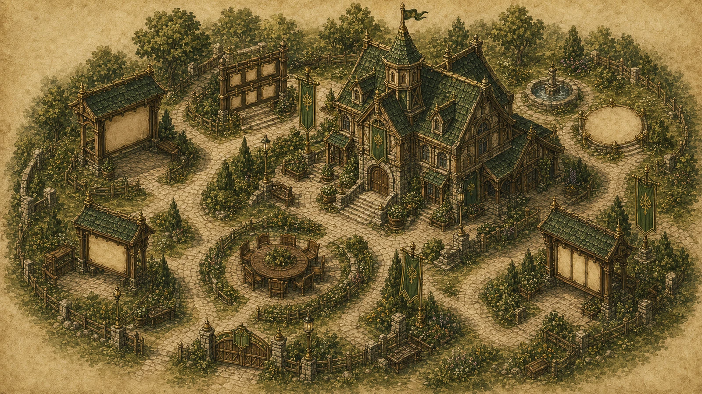

Open Work
24
6 ready for pickup
Spring works council
Orchard Vale Guildhall Planner
Coordinate public work, steward reviews, and market-day dependencies without losing the human thread.
Blocked
2
Both have named owners
Supplies
91%
Lantern oil arrives today
Automation
7
Routines running cleanly
Work by status
Guild Work Board
Backlog
5
Survey
Mill lane
Mark repair stones before rain
Walk the lane with stakes and mark the three worst edges for the mason crew.
Ready
Notices
Refresh visitor route cards
In Motion
8
Active
Bridge lamps
Install west bridge lantern brackets
Bracket spacing is approved. Rowan needs two runners after the market cart clears.
Today
Kitchen hall
Confirm supper bench count
Review
4
Review
Archive
Question desk intake labels
Alder is checking the wording for clarity before the forms are copied.
Map
Green
Check fountain marker placement
Ready
7
Done
Market
Vendor welcome table packet
Stamped, bundled, and waiting beside the north gate ledger.
Done
Tools
Sharpen east-shed shears
Work locations
Guildhall District



-
Guildhall review desk
-
West bridge lantern crew
-
Supply depot pickup
Supply ledger
Ready For Pickup
Item
Owner
Status
Due
Brass screws, size four
Squirrel storekeeper
Packed
14:00
Lantern oil crate
Robin courier
In transit
15:15
Blank route cards
Mouse clerk
Filed
Ready